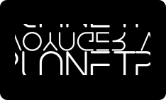

周琬雅 Megara Chou
我是琬雅，一直都很想當工程師，在資策會的推薦下選擇前往緯育TibaMe接受訓練。我的職涯目標是轉型為一名專業的全端工程師。為了實現這一目標，除了TibaMe的課程外，我還投資自己，報名了ALPHA
Camp的前端框架(React)與後端線上課程，以確保技能的全面性。
過去四個月的學習旅程中，我的努力和進步得到了認可，榮獲了成長獎。從曾經的會計記帳和文書工作，到如今能夠獨立開發和創造，每一步的轉變都讓我深感滿足和興奮。對我而言，程式設計不僅是技能，更是一種全新的創作方式。我期待未來能夠在這一領域中，持續學習、進步。
作品集 網站連結
團專發表
專業技能
基礎設計與布局
擁有網頁設計基礎，能夠用Figma製作Flow Chart、UI flow 、Wireframe、Mockup，並具備HTML、CSS及JavaScript的專業知識，能夠打造出直觀且用戶友善的界面。
全端網頁開發
具備打造兼具前後端的 Web App 產品。，從網頁切版、RWD，到操作DOM事件等前端能力，再進階到使用PHP後端語言建構伺服器，深入瞭解網路應用程式運作的每個環節，並親手打造自己的產品。
高級技術應用
透過前端框架(Vue)建立頁面，快速開發動態網頁應用。在後端技術方面，基本的SQL資料庫設計應用、建置完整的登入系統、實作購物車與金流串接。
工作經歷
財會人員-AR
處理AR相關事務，除了協助主管編制新報表外，很可惜因為個人職涯規劃，雖然才任職半年，但主動編制了所有關於AR相關的系統SOP、報表編制SOP、mail回覆等資料，協助主管不用在分人力教新來的員工。
記長組-記帳、工商、境外公司
曾經在八中事務所-記帳組部門服務了4-5年，處理關於境外公司工商、與各行各業的記帳事宜，除了原本的工作職掌，因會計事務所的人才流動率大，帳列有很多客戶與前位記帳員遺留的帳務問題，接在我任期內幫忙與會計師溝通與解決，境外公司工商歷史久遠的資料，也在我任期幫忙重新歸檔完成。